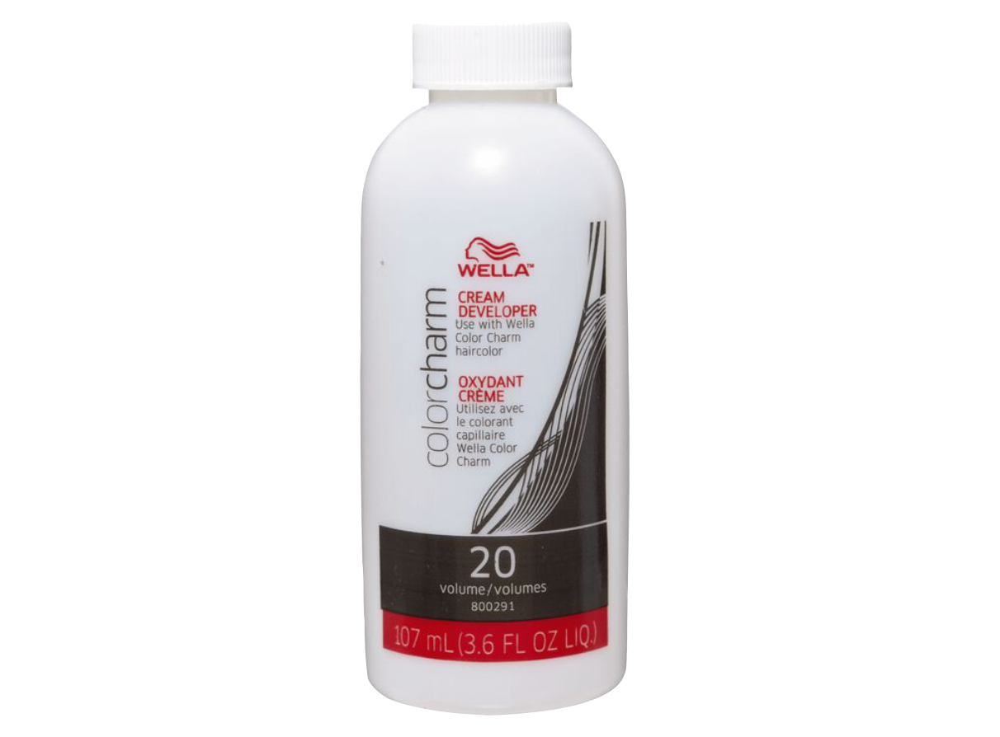

+

Toner is a product used to subdue warm tones in haircolors. When bleaching, nine times out of ten yellow or orange tones will appear, depending on what level your hair was to begin with.
If you're anywhere between a 1-6, odds are orange will appear. If the goal is platinum blonde, you will have to do a second bleach application to reach a 7 or above, with either the same or a lower volume developer. If the goal is a lighter brown, you can simply add a blue based toner to the hair to create a cooler brown.
Anywhere between a 7-10+, odds are yellow will appear. Toner works best when being applied to a pale yellow, the ideal shade often compared to the inside of a banana.
Toners typically require a 20 volume developer and are a 1:2 mixing ratio. These products are super fun, because you can literally watch it transform your hair. Due to this, you can leave it on for as long as you'd like. The regular recommended 45 minutes is standard, however if you want a lighter/deeper tone you can leave it one shorter/longer.
If you're planning on keeping the final product for a while, you may want to invest in a toning shampoo. Unfortuantely toners are like permanent colors and last usually a month, before the sun and other elements begin to bring back warmer
shades. A purple or blue shampoo deposites the tone onto your hair as frequently as you use it in the shower.
hair lightening
home